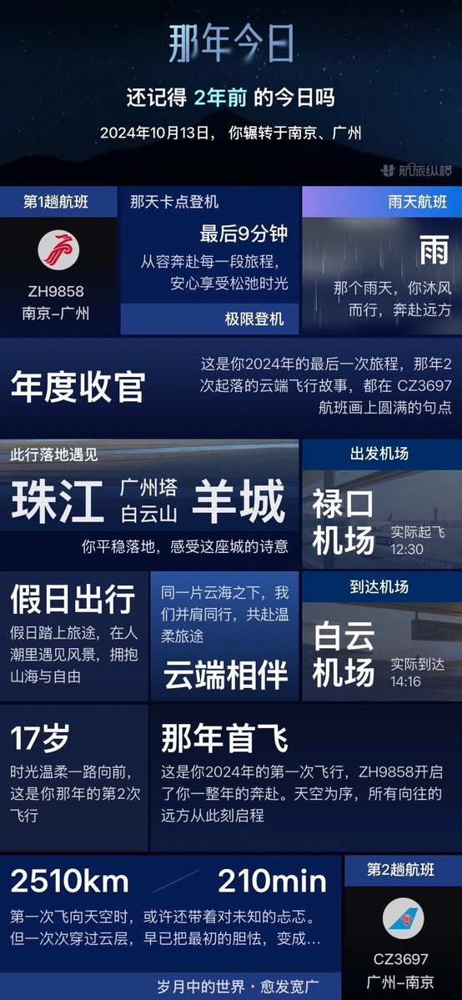
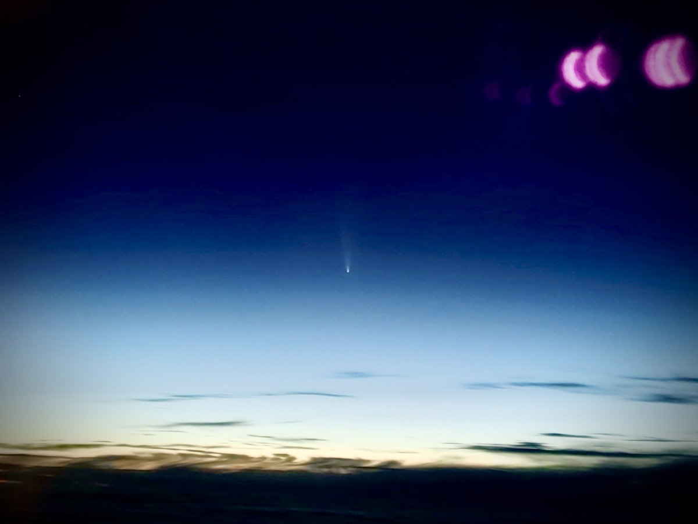

你还记得两年前的今天，也就是2024-10-13发生了什么吗？
那天，咱做了自己迄今最有想象力和行动力的事情…
（封面图片由grok生成，原图是本文最后一张图喵）
也许关于那天很多人印象最深的是星舰五飞，超重助推器首次塔接回收…咱看到尾焰绽放和筷子稳稳夹紧的历史一刻是在从机场回家的地铁上♡=•ㅅ＜=)～不过，它并不是我现在想起那天的原因哦
真正打开回忆水龙头的，是今早航旅纵横在咱手机上弹出的一条消息，一条“那年今日”飞行回忆呢…好像它猜到了咱那天的飞行非同寻常欸☺️
毕竟很少有人会从南京飞广州，在航站楼坐两个小时什么都不干就飞回去吧～因为我的目的地不是宁城也不是穗城，而是平流层❛˓◞˂̵✧
去那里，是为了追逐一颗大彗星呀…
C/2023 A3 Tsuchinshan-ATLAS，小A3哦，或者叫紫金山-阿特拉斯～希望大家还记得它…20年NEOWISE离去至今最耀眼的彗星呢🥰
从23年1月它被发现直到那一天，咱期待了它将近两年…一天天数着它越过木星轨道再通过雪线的日子，直到它成为我大望远镜里微弱的光点…那时我相信，自己很快就能亲眼看到它壮丽的毛茸茸大尾巴庄严矗立在地平线上啦😚
可是天气开始作祟…阴天遮住了整个黄昏地平线，雨水每一天都在浇灭咱的梦想…九月下旬开始，除去它被太阳光芒掩盖的那几天，咱每天都用肉眼双筒和大望远镜坚持守候…学校天台家里阳台和郊外深山都跑了个遍，一无所获呢૮₍ɵ̷﹏ɵ̷̥̥᷅₎ა
再这样她就要溜走了…轨道周期是六万年，咱大概不太想等ww…而半个中国的天气都不太理想，于是咱灵光一现，决定…
“呐，那我去找你吧…穿破雨幕，跃出阴云…让我们相会在蓝天之上；我知道你在那里等我哦”
于是咱在学校摸鱼的时候开始规划航线…这可能是最奇怪的机票决策了，我不在乎目的地，只在乎时间和舷窗朝向…两天内我列出了南京出发向大致南北方向有航线的所有国内机场，以及黄昏时刻的可选航班…然后买下了右侧靠窗，离出发只有两天的昂贵机票…往返好像是两三千块钱吧🥹
那个星期天我就这样登上了这趟…整架飞机只有我一人目的地是天空的特殊航班🥰返程的路上，我趴在舷窗上，心里默念着让太阳赶紧暗下去，霞光赶紧淡下去…直到繁星漫天的那一刻，眼角一闪，我就知道她来见我啦～
你好呀，紫金山-阿特拉斯～
好美…肉眼在稀薄的大气里看比照片震撼得多，能看见锋芒锐利如星般耀眼的彗发，还有轻纱般延展扩散的彗尾扬向天空融进夜幕…就像浮在夕阳上点亮夜空的小小探照灯束呀🥹
可惜飞机留给我的时间只有不到二十分钟…很快转向和穿云下降就让她离开了咱的视野，留下的照片也只有旧手机拍的几张，质量也真的很差呢😇
不过，咱会一直记得大洋彼岸星舰塔接的那天，星城震耳欲聋的欢呼声从耳机里传来的那一刻，我在地铁上热泪盈眶…因为几千块买来的那张二十分钟的彗星门票所凝成的回忆结晶余温尚暖，正躺在塔架上微微摇晃的超重助推器背后，咱手机的相册里呀(⑅˘̤ ᵕ˘̤)❤️
喵呜～写个文章版试试哦，咱目前最梦幻的记叙文素材了嘻嘻…希望自己能尽快打破这个记录喵 (⑅˘̤ ᵕ˘̤)*❤️*
https://t.co/x7xubbniDp
Article attached to this post
星缀霞，舰破云

